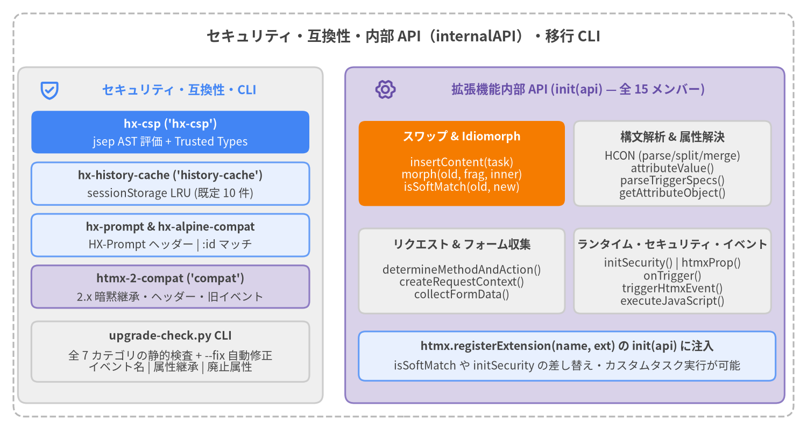

セキュリティ・互換性・内部 API・CLI ツール
本カタログページでは、セキュリティ・キャッシュ・互換性拡張機能（hx-csp、hx-history-cache、hx-prompt、hx-alpine-compat、htmx-2-compat）、htmx.registerExtension(name, { init(api) }) に渡される全 15 メンバーの 拡張機能内部 API（internalAPI）、および upgrade-check マイグレーション CLI ツール（src/scripts/upgrade-check.py）のリファレンスを収録します。
サマリーテーブル#
| シンボル | 登録名 / カテゴリ | シグネチャ / 属性 / 設定オプション | 主な用途 |
|---|---|---|---|
hx-csp |
'hx-csp'（セキュリティ拡張） |
htmx.js の後に hx-csp.js を読み込む |
new Function / AsyncFunction を厳格な CSP 対応の再帰下降 AST 評価器（jsep）と Trusted Types ポリシー（'htmx-csp'）に置き換えます。 |
hx-history-cache |
'history-cache'（キャッシュ拡張） |
hx-history="false", htmx.config.historyCacheSize |
履歴遷移前の <body hx-history-elt> スナップショットを sessionStorage（htmx-history-cache）に保存し、ブラウザの戻る/進む（popstate）で即座に復元します。 |
hx-prompt |
'hx-prompt'（UX / 互換拡張） |
hx-prompt="<message>" |
htmx:confirm フェーズで window.prompt() ダイアログを表示し、入力値を HX-Prompt リクエストヘッダーおよび evt.detail.prompt に付与します。 |
hx-alpine-compat |
'alpine-compat'（互換拡張） |
api.isSoftMatch をオーバーライド |
サーバー HTML 側に静的な id 属性がない場合でも、Alpine.js の動的な :id / x-bind:id 要素を innerMorph / outerMorph 時に維持します。 |
htmx-2-compat |
'compat'（互換拡張） |
htmx 2.x の既定値・属性・イベントを復元 | implicitInheritance の有効化、HX-Trigger* レスポンスヘッダー処理、hx-vals/hx-headers の注入、旧属性の変換、2.x キャメルケースイベントの再発火を提供します。 |
HCON |
api.HCON (internalAPI) |
{ parse(str), split(str), merge(src, dst) } |
htmx Config Object Notation（緩和 JSON、裸のキー、ドットパス a.b:1、<.../> トークン）の解析、トップレベルカンマ分割、安全なディープマージを提供します。 |
attributeValue |
api.attributeValue (internalAPI) |
(elt, name, defaultVal?, eltCollector?, allowInheritance?) => string | null |
elt または祖先要素（:inherited, :append）から hx-* 属性値を解決し、プレフィックス正規化と htmx:after:implicitInheritance の発火を行います。 |
parseTriggerSpecs |
api.parseTriggerSpecs (internalAPI) |
(spec) => Array<{ name: string, [mod: string]: any }> |
hx-trigger 仕様文字列を構造化されたトリガー定義オブジェクト配列（every, [filter], delay, throttle, from, target）に解析します。 |
determineMethodAndAction |
api.determineMethodAndAction (internalAPI) |
(elt, evt?) => { action: string | undefined, method: string } |
hx-method/hx-action、hx-get..hx-query、またはブーストされた <a>/<form> から HTTP method（大文字、既定 'GET'）と送信先 action を決定します。 |
createRequestContext |
api.createRequestContext (internalAPI) |
(sourceElement, sourceEvent?) => Object |
AbortController、解決済み target、swap、select、selectOOB、headers、および hx-config を統合したリクエストコンテキスト（ctx）を構築します。 |
collectFormData |
api.collectFormData (internalAPI) |
(elt, form, submitter, validate, isGet) => FormData | undefined |
validate が真の場合に HTML5 reportValidity() を実行し（失敗時は undefined）、form、非 GET コンテナ、submitter、hx-include から FormData を収集します。 |
getAttributeObject |
api.getAttributeObject (internalAPI) |
(elt, attrName, callback, scope?) => Promise<void> | undefined |
HCON/JSON または js:/javascript: オブジェクト属性（hx-vals, hx-headers 等）を評価し、解決されたオブジェクトを callback(obj) に渡します。 |
insertContent |
api.insertContent (internalAPI) |
(task, cssTransition?) => Promise<void> |
スワップタスク（innerHTML, outerHTML, innerMorph, outerMorph 等）を実行し、[hx-preserve]、View Transitions、settle イベント、<script> 実行、htmx.process() を処理します。 |
morph |
api.morph (internalAPI) |
(oldNode, fragment, innerHTML) => void |
永続 ID マップ、pantry 退避、morphIgnore/morphSkip、htmx:before:morph:node/attr フックを備えた Idiomorph DOM モーフィングを実行します。 |
isSoftMatch |
api.isSoftMatch (internalAPI) |
(oldNode, newNode) => boolean |
Idiomorph の候補探索時に oldNode と newNode が同一 tagName かつ互換性のある id（または同一 <script>）を持つかを判定します。 |
initSecurity |
api.initSecurity (internalAPI) |
(ttPolicy, syncFn, asyncFn) => void |
htmx コア内部の Trusted Types ポリシー（createHTML, createScript）、同期 #Function、および非同期 #AsyncFunction コンストラクタを差し替えます。 |
onTrigger |
api.onTrigger (internalAPI) |
(elt, specString, handler) => void |
specString を解析し、hx-trigger の全機能（load, revealed, intersect, every, フィルタ, delay, throttle, from）を備えたリスナーを elt に登録します。 |
htmxProp |
api.htmxProp (internalAPI) |
(elt) => { listeners: Array, triggerSpecs: Array } |
elt._htmx 状態オブジェクトを遅延初期化して返し、要素に data-htmx-powered="true" を刻印します。 |
triggerHtmxEvent |
api.triggerHtmxEvent (internalAPI) |
(on, eventName, detail?, bubbles?) => boolean |
対応する拡張機能ライフサイクルフック（htmx_<event>）を呼び出し、キャンセル可能な CustomEvent をディスパッチします（キャンセル時は false）。 |
executeJavaScript |
api.executeJavaScript (internalAPI) |
(thisArg, obj, code, expression?, isAsync?, compile?) => any |
htmx:scope を発火し、htmx ヘルパーを thisArg に束縛した上で、#AsyncFunction / #Function により JS 式・文を評価またはコンパイル（compile=true）します。 |
upgrade-check |
src/scripts/upgrade-check.py (CLI) |
python3 upgrade-check.py [paths...] [--fix] [--no-color] |
HTML/テンプレートおよび JS/TS ファイルを全 7 カテゴリで静的解析し、htmx 2.x から htmx 4.0 への移行診断と自動書き換えを行う CLI ツールです。 |

Source Code
from drawlib.canvas import save, setup
from drawlib.icons import phosphor
from drawlib.lines import line
from drawlib.shapes import rectangle
from drawlib.styles import Styles
from drawlib.text import text
setup(width=180, height=96, dpi=150)
# Outer frame
rectangle((90, 48), width=174, height=90, style=Styles.MutedDashed.patch(shape_r=2.5))
text(
(90, 88.0),
"セキュリティ・互換性・内部 API（internalAPI）・移行 CLI",
style=Styles.DarkBold.patch(text_size=13.0),
)
# Left Column: Security, Caching & Compatibility Extensions + CLI
rectangle((38, 43.5), width=68, height=75, style=Styles.Neutral.patch(shape_r=2.0))
phosphor.shield_check((11, 76), width=4.8, style=Styles.PrimaryBold)
text((40, 76), "セキュリティ・互換性・CLI", style=Styles.PrimaryBold.patch(text_size=11.0))
# Focal Point 1: hx-csp
rectangle((38, 66.5), width=62, height=9.5, style=Styles.PrimaryFlat.patch(shape_r=1.5))
text((38, 68.3), "hx-csp ('hx-csp')", style=Styles.WhiteBold.patch(text_size=10.2))
text((38, 64.3), "jsep AST 評価 + Trusted Types", style=Styles.White.patch(text_size=10.0))
rectangle((38, 55.0), width=62, height=9.5, style=Styles.PrimaryNeutral.patch(shape_r=1.5))
text((38, 56.8), "hx-history-cache ('history-cache')", style=Styles.DarkBold.patch(text_size=10.0))
text((38, 52.8), "sessionStorage LRU (既定 10 件)", style=Styles.Dark.patch(text_size=10.0))
rectangle((38, 43.5), width=62, height=9.5, style=Styles.PrimaryNeutral.patch(shape_r=1.5))
text((38, 45.3), "hx-prompt & hx-alpine-compat", style=Styles.DarkBold.patch(text_size=10.0))
text((38, 41.3), "HX-Prompt ヘッダー | :id マッチ", style=Styles.Dark.patch(text_size=10.0))
rectangle((38, 32.0), width=62, height=9.5, style=Styles.SecondaryNeutral.patch(shape_r=1.5))
text((38, 33.8), "htmx-2-compat ('compat')", style=Styles.DarkBold.patch(text_size=10.2))
text((38, 29.8), "2.x 暗黙継承・ヘッダー・旧イベント", style=Styles.Dark.patch(text_size=10.0))
rectangle((38, 17.5), width=62, height=13.5, style=Styles.Neutral.patch(shape_r=1.5))
text((38, 21.0), "upgrade-check.py CLI", style=Styles.DarkBold.patch(text_size=10.2))
text((38, 15.2), "全 7 カテゴリの静的検査 + --fix 自動修正\nイベント名 | 属性継承 | 廃止属性", style=Styles.Dark.patch(text_size=10.0))
# Right Panel: Extension Internal API (internalAPI — 15 members)
rectangle((126, 43.5), width=98, height=75, style=Styles.SecondaryNeutral.patch(shape_r=2.0))
phosphor.gear_six((86, 76), width=4.8, style=Styles.SecondaryBold)
text((129, 76), "拡張機能内部 API (init(api) — 全 15 メンバー)", style=Styles.SecondaryBold.patch(text_size=10.8))
# Focal Point 2: Swap & Idiomorph Engine
rectangle((103, 59.5), width=46, height=19, style=Styles.AccentFlat.patch(shape_r=1.5))
text((103, 65.5), "スワップ & Idiomorph", style=Styles.WhiteBold.patch(text_size=10.2))
text((103, 57.0), "insertContent(task)\nmorph(old, frag, inner)\nisSoftMatch(old, new)", style=Styles.White.patch(text_size=10.0))
rectangle((150, 59.5), width=44, height=19, style=Styles.Neutral.patch(shape_r=1.5))
text((150, 65.5), "構文解析 & 属性解決", style=Styles.DarkBold.patch(text_size=10.2))
text((150, 57.0), "HCON (parse/split/merge)\nattributeValue()\nparseTriggerSpecs()\ngetAttributeObject()", style=Styles.Dark.patch(text_size=10.0))
rectangle((103, 35.5), width=46, height=19, style=Styles.Neutral.patch(shape_r=1.5))
text((103, 41.5), "リクエスト & フォーム収集", style=Styles.DarkBold.patch(text_size=10.2))
text((103, 33.0), "determineMethodAndAction()\ncreateRequestContext()\ncollectFormData()", style=Styles.Dark.patch(text_size=10.0))
rectangle((150, 35.5), width=44, height=19, style=Styles.Neutral.patch(shape_r=1.5))
text((150, 41.5), "ランタイム・セキュリティ・イベント", style=Styles.DarkBold.patch(text_size=10.0))
text((150, 33.0), "initSecurity() | htmxProp()\nonTrigger()\ntriggerHtmxEvent()\nexecuteJavaScript()", style=Styles.Dark.patch(text_size=10.0))
rectangle((126.5, 16.5), width=93, height=11, style=Styles.PrimaryNeutral.patch(shape_r=1.5))
text((126.5, 18.7), "htmx.registerExtension(name, ext) の init(api) に注入", style=Styles.DarkBold.patch(text_size=10.2))
text((126.5, 14.3), "isSoftMatch や initSecurity の差し替え・カスタムタスク実行が可能", style=Styles.Dark.patch(text_size=10.0))
save()
セキュリティ・キャッシュ・互換性拡張機能#
hx-csp (hx-csp)#
htmx コアの動的コードコンパイル（new Function および new AsyncFunction）と直接の innerHTML 代入を、厳格な Content Security Policy（CSP）に準拠した AST 評価器（jsep）および Trusted Types パススルーポリシー（'htmx-csp'）に置き換え、'unsafe-eval' を許可することなく hx-on:*、hx-vals="js:..."、hx-headers="js:..."、および hx-live を安全に実行可能にします。
拡張機能登録とフック動作
- 登録名:
'hx-csp'（src/ext/hx-csp.js） init(api):window.trustedTypes.createPolicy('htmx-csp', { createHTML: s => s, createScript: s => s })により Trusted Types ポリシーを作成します（Trusted Types 非対応環境やポリシー作成例外時は{ createHTML: s => s, createScript: s => s }にフォールバックします）。api.initSecurity(policy, cspFunction(false), cspFunction(true))を呼び出し、htmx 内部の#ttPolicy、同期#Function、および非同期#AsyncFunctionコンストラクタを差し替えます。
サポートされる JavaScript サブセット（JSEP AST 評価器）
- サポートされる構文:
- リテラル（
Literal）、識別子（Identifier）、this（ThisExpression）、テンプレートリテラル（TemplateLiteral）、配列リテラル（ArrayExpression）、オブジェクトリテラル（ObjectExpression、スプレッド...対応）。 - プロパティアクセス（
.および[]によるMemberExpression、オプショナルチェイニング?.とメソッドのthisバインド対応）、関数・メソッド呼び出し（?.()と...spread対応のCallExpression）、および安全なコンストラクタに対するnew生成（NewExpression）。 - 単項演算子（
!,+,-,~,typeof,void,delete,await）、更新演算子（前置・後置の++,--）、二項演算子（+,-,*,/,%,**,==,!=,===,!==,<,>,<=,>=,<<,>>,>>>,&,|,^,in,instanceof）、論理演算子（&&,||,??）、三項演算子（ConditionalExpression）、カンマ演算子（SequenceExpression）。 - 代入演算子（
=,+=,-=,*=,/=,%=,**=,||=,&&=,??=）、単一・複数引数アロー関数（x => ...,(a, b) => ...,async () => ...）、およびセミコロン区切りの複文（Compound）とreturn。
- リテラル（
- ブロックされる危険な構文（セキュリティサンドボックス）:
BLOCKED_PROPSにより'constructor'、'__proto__'、'prototype'へのアクセスを遮断します（読み取りはundefinedを返し、書き込みは無視されます）。BLOCKED_CALLSによりeval、Function、AsyncFunction、GeneratorFunction、AsyncGeneratorFunction、および文字列第 1 引数のsetTimeout('...')/setInterval('...')呼び出しを遮断します（Error('Blocked by hx-csp')をスロー）。
<!-- 'unsafe-eval' なしの厳格な CSP を適用 -->
<meta http-equiv="Content-Security-Policy"
content="default-src 'self'; script-src 'self'; require-trusted-types-for 'script'; trusted-types htmx-csp;">
<script src="/htmx.js"></script>
<script src="/ext/hx-csp.js"></script>
<body hx-ext="hx-csp">
<button hx-post="/like"
hx-vals="js:{ count: Number(this.dataset.count) + 1 }"
hx-on:click="this.dataset.count = Number(this.dataset.count) + 1"
data-count="4">
いいね
</button>
</body>
hx-history-cache (history-cache)#
htmx がブラウザ履歴を push または replace する直前に、現在のページの履歴対象要素（[hx-history-elt] または document.body）を sessionStorage（'htmx-history-cache'）へスナップショット保存し、ブラウザの戻る/進む（popstate）操作時にネットワーク通信なしでキャッシュから HTML を即時復元します。
設定オプションと属性
- 登録名:
'history-cache'（src/ext/hx-history-cache.js） hx-history="false": ドキュメント内の任意の要素に配置すると（htmx.find('[hx-history="false"]')）、現在の URL のキャッシュ保存を無効化し、そのパスの既存キャッシュエントリを削除します。htmx.config.historyCacheSize:sessionStorageの'htmx-history-cache'キー内に保持する最大 URL エントリ数（LRU キャッシュ）。既定値は10です。<= 0を設定するとキャッシュを無効化し、'htmx-history-cache'を削除します。
ライフサイクルイベントとフック動作
- 履歴更新前（
htmx_before_historyUpdate）:pushState/replaceStateの直前に実行されます。saveToCache(normalizePath(location.pathname + location.search), getHistoryElement())を呼び出して遷移前のcleanInnerHTML(historyElt)を保存し、history.state = { ...history.state, cached: true }を記録します。
- ブラウザ戻る/進むによる復元前（
htmx_before_restoreHistory）:sessionStorageの LRU キャッシュ内でdetail.pathを検索します。- キャッシュヒット時:
htmx:historyCacheHit（{ path, content }）を発火します。キャンセルされなければapi.insertContent({ type: 'innerHTML', target, content, transition: htmx.config.transitions })で[hx-history-elt]/document.bodyにスワップし、htmx:after:restoreHistory（{ path, cacheMiss: false }）を発火してfalseを返し、コアのネットワーク再取得をキャンセルします。 - キャッシュミス時:
htmx:historyCacheMiss（{ path }）を発火し、htmx コアによる通常のネットワーク復元処理を続行させます。
- サニタイズ処理（
cleanInnerHTML）: 履歴要素をクローンし、[hx-Vals]要素の除去および一時的な.htmx-request/.htmx-settlingクラスの削除を行ってからsessionStorageにシリアライズします。
<script src="/ext/hx-history-cache.js"></script>
<script>
htmx.config.historyCacheSize = 20; // sessionStorage に最大 20 ページまで保持
</script>
<body hx-ext="history-cache" hx-history-elt>
<nav>
<a hx-get="/products?page=2" hx-push-url="true" hx-target="#main">ページ 2</a>
</nav>
<main id="main">...</main>
</body>
hx-prompt (hx-prompt)#
hx-prompt（または継承された hx-prompt）を持つ要素の htmx:confirm ライフサイクルイベントをインターセプトし、ブラウザ標準の同期 window.prompt() ダイアログを表示して、ユーザーの入力文字列を HX-Prompt リクエストヘッダーおよび evt.detail.prompt に設定します。
属性とリクエストヘッダー
- 登録名:
'hx-prompt'（src/ext/hx-prompt.js） hx-prompt="<message>":api.attributeValue(elt, 'hx-prompt')を通じて解決されます（:inheritedやimplicitInheritanceに対応）。- キャンセル時の動作: ユーザーが「キャンセル」をクリックした場合（
window.prompt()がnullを返した場合）、htmx_confirmがfalseを返し、issueRequest()が実行される前にリクエストを中止します。 - ヘッダーとイベント詳細: 入力が確定されると、
evt.detail.prompt = responseおよびevt.detail.ctx.request.headers['HX-Prompt'] = responseを設定します。
<script src="/ext/hx-prompt.js"></script>
<div hx-ext="hx-prompt">
<button hx-delete="/account/api-key/42"
hx-prompt="削除を確認するためキー名を入力してください:"
hx-target="#key-row-42"
hx-swap="delete">
API キーを失効
</button>
</div>
hx-alpine-compat (alpine-compat)#
htmx 内部の Idiomorph ノード一致判定関数（api.isSoftMatch）を拡張し、Alpine.js の :id または x-bind:id によって動的に id 属性がバインドされている要素が、静的な id 属性を持たないサーバー側 HTML フラグメントとモーフィングされる際にも同一要素としてインプレース更新されるようにします。
内部メカニズム
- 登録名:
'alpine-compat'（src/ext/hx-alpine-compat.js） - 必要となる理由: 標準の Idiomorph（
api.isSoftMatch(oldNode, newNode)）では、既存 DOM のoldNodeに Alpine の:id/x-bind:idによって実行時oldNode.idが設定されている一方、サーバーから返された未評価のnewNodeには:id="item.id"のみがありnewNode.id === ""であるため、oldNode.id === newNode.idがfalseとなり、DOM ノードが破棄・再生成されて Alpine コンポーネントの状態が失われてしまいます。 - オーバーライドロジック:
api.isSoftMatchをラップし、元のorigSoftMatch(oldNode, newNode)がfalseを返した場合でも、(oldNode.hasAttribute(':id') || oldNode.hasAttribute('x-bind:id')) && !newNode.idかつoldNode.tagName === newNode.tagName（SCRIPTの場合はisEqualNode）であればtrueを返します。
<script src="/ext/hx-alpine-compat.js"></script>
<div hx-ext="alpine-compat"
x-data="{ items: [{ id: 'row-1', label: 'Alpha' }] }"
hx-get="/items-fragment"
hx-swap="innerMorph">
<template x-for="item in items" :key="item.id">
<div :id="item.id" x-text="item.label"></div>
</template>
</div>
htmx-2-compat (compat)#
htmx 2.x の設定既定値、属性の暗黙継承、旧属性エイリアス、HX-Trigger* レスポンスヘッダーによるイベント発火、hx-vals / hx-headers のリクエスト注入、および htmx 2.x のキャメルケースライフサイクルイベント名を包括的に復元する互換性レイヤーを提供します。
互換性機能と復元される既定値
- 登録名:
'compat'（src/ext/htmx-2-compat.js） - 設定既定値の復元（
init）:htmx.config.implicitInheritance = trueを設定します（hx-target,hx-swap,hx-select等の自動継承を復元）。htmx.config.defaultSwap = 'innerHTML'を設定します。htmx.config.extensions = 'hx-prompt'を設定します（hx-promptを自動有効化）。
- 属性の自動変換（
htmx_before_process&htmx_after_implicitInheritance）:- 要素上の
hx-history-eltをhx-historyに変換します（htmx_before_process）。 hx-swapの'morph'および'morph:innerHTML'を'innerMorph'に、'morph:outerHTML'を'outerMorph'に正規化します。hx-disinherit="*"をhx-inherit="false"に変換します。hx-params="*"をhx-include:inherited="*"に、hx-params="none"をhx-include:inherited="none"に変換します（カンマ区切りフィルタリストには警告を出力）。hx-sync="<selector>:<strategy>"をhx-config='{"actionQueue": {"scope": "<selector>", "strategy": "<strategy>"}}'に変換します。- 廃止された
hx-varsやhx-ext="ignore:..."を検出した際に警告を出力します。
- 要素上の
hx-vals&hx-headersの評価と注入（htmx_config_request）:- 継承およびローカルの
hx-valsをapi.getAttributeObjectで収集し、解決されたキー/値ペアをctx.request.body（FormData）にマージします。 - 継承およびローカルの
hx-headersをapi.getAttributeObjectで収集し、解決されたヘッダーをctx.request.headersにマージします。
- 継承およびローカルの
HX-Trigger*レスポンスヘッダー処理（htmx_after_request,htmx_after_swap,htmx_after_settle）:HX-Trigger、HX-Trigger-After-Swap、およびHX-Trigger-After-Settle（JSON オブジェクト{"evt": detail}とカンマ区切りイベント名の両方に対応）を解析し、htmx.trigger()で発火します。
- 旧 2.x イベント名のマッピング:
- htmx 4.0 のコロン区切りイベントを htmx 2.x のキャメルケース名（
htmx:beforeRequest,htmx:afterRequest,htmx:configRequest,htmx:beforeSwap,htmx:afterSwap,htmx:beforeOnLoad,htmx:afterOnLoad,htmx:beforeProcessNode,htmx:afterProcessNode,htmx:beforeSend,htmx:responseError,htmx:sendError,htmx:sendAbort,htmx:timeout,htmx:oobBeforeSwap,htmx:oobAfterSwap,htmx:beforeTransition,htmx:historyRestore,htmx:beforeHistoryUpdate,htmx:pushedIntoHistory,htmx:replacedInHistory）でも再発火し、detail.xhrに擬似xhrオブジェクト（status,statusText,response,responseText,getResponseHeader,getAllResponseHeaders）を合成します。
- htmx 4.0 のコロン区切りイベントを htmx 2.x のキャメルケース名（
- 旧
htmx.*グローバルヘルパーの復元:htmx.values(elt, type)、htmx.remove(elt, delay?)、htmx.addClass(elt, cls, delay?)、htmx.removeClass(elt, cls, delay?)、htmx.toggleClass(elt, cls)、htmx.closest(elt, selector)、およびhtmx.defineExtension(name, ext)（onEventとtransformResponseフックを htmx 4.0 に適合）を復元します。
<script src="/htmx.js"></script>
<script src="/ext/hx-prompt.js"></script>
<script src="/ext/htmx-2-compat.js"></script>
<body hx-ext="compat">
<!-- htmx 2.x の属性・イベント・暗黙継承がそのまま動作 -->
<div hx-target="#output" hx-vals='{"source": "legacy-panel"}'>
<button hx-post="/submit"
hx-on:htmx:after-request="console.log(event.detail.xhr.status)">
送信 (2.x 互換モード)
</button>
</div>
<div id="output"></div>
</body>
拡張機能内部 API (internalAPI)#
htmx.registerExtension(name, extensionDefinition) によって拡張機能が登録されると、htmx は初期化時に一度だけ extensionDefinition.init(internalAPI) を呼び出し、15 個のプロパティ・メソッドを持つ internalAPI オブジェクト（src/htmx.js 内の #internalAPI）を渡します。拡張機能はこれらの内部プリミティブを直接呼び出すだけでなく、api.isSoftMatch や api.initSecurity などをラップ・差し替えることも可能です。
HCON#
htmx 独自の軽量設定記法 HCON（htmx Config Object Notation） のパーサー、トップレベルカンマ分割関数、およびプロトタイプ汚染対策済みのディープマージ関数を提供します。
オブジェクトシグネチャとメソッド
interface HCON {
parse(string: string): Record<string, any>;
split(string: string): string[];
merge(source: Record<string, any>, target: Record<string, any>): Record<string, any>;
}
api.HCON.parse(string):- 標準的な JSON オブジェクトとして解釈可能な場合は
JSON.parse(string)の高速パスを使用します。 - それ以外の場合は外側の
{ ... }（省略可）を取り除き、カンマまたは空白で区切られた緩和キー・バリュー対を解析します：- キーにはクォートなしの識別子、ドット区切りパス（
actionQueue.strategy: 'drop'->{ actionQueue: { strategy: 'drop' } }）、またはシングルクォート/ダブルクォート文字列を使用できます。 - 値には
true、false、null、有限数値、クォート文字列（\エスケープ対応）、ネストされた{...}/[...]JSON 構造、<.../>トークン、または裸のトークンを使用できます。 - 値を持たないキーは自動的に
trueとなります（例:"once changed delay:300ms"->{ once: true, changed: true, delay: "300ms" }）。
- キーにはクォートなしの識別子、ドット区切りパス（
- 標準的な JSON オブジェクトとして解釈可能な場合は
api.HCON.split(string):(...)、[...]、<.../>、'...'、および"..."の内部にあるカンマを無視し、トップレベルのカンマ,のみで文字列を分割します。
api.HCON.merge(source, target):sourceのプロパティをtargetに再帰的にディープマージしてtargetを返します。プロトタイプ汚染を防ぐため'__proto__'、'constructor'、'prototype'キーはスキップされます。
htmx.registerExtension('custom-config', {
init(api) {
const specs = api.HCON.split('click[ctrlKey, shiftKey], keyup delay:200ms');
// ['click[ctrlKey, shiftKey]', 'keyup delay:200ms']
const parsed = api.HCON.parse('actionQueue.strategy: drop, timeout: 5000, once');
// { actionQueue: { strategy: 'drop' }, timeout: 5000, once: true }
}
});
attributeValue#
elt またはその DOM 祖先要素から htmx 属性値を解決します。htmx.config.prefix、htmx.config.metaCharacter、明示的な :inherited / :append 修飾子、hx-inherit、および htmx.config.implicitInheritance を自動的に考慮します。
シグネチャとパラメータ
attributeValue(
elt: Element,
name: string,
defaultVal?: any,
eltCollector?: (val: string, ownerElt: Element) => void,
allowInheritance?: boolean // 既定値は htmx.config.implicitInheritance
): string | null | any
- 解決ルール:
adjustName()によりnameを正規化します（htmx.config.prefixおよびhtmx.config.metaCharacterを適用）。- まず
elt自身のnameまたはname:inheritedを確認します。 :appendまたは:inherited:appendが指定されている場合、祖先チェーンを遡って値を収集し、,で連結します。- 親要素を遡りながら
:inherited属性（またはallowInheritanceやhx-inheritにより継承が許可されている場合は通常の属性）を検索します。 implicitInheritanceによって祖先要素から解決された場合、htmx:after:implicitInheritance（{ elt, parent }）をトリガーします。eltCollector(val, ownerElt)が指定されている場合は値を持つ各要素に対してコールバックを呼び出し、属性が見つからない場合はdefaultValを返します。
htmx.registerExtension('custom-attr-reader', {
init(api) {
this.api = api;
},
htmx_config_request(elt, detail) {
const team = this.api.attributeValue(elt, 'hx-team', 'default-team');
detail.ctx.request.headers['X-Team'] = team;
}
});
parseTriggerSpecs#
hx-trigger 属性の文字列を解析し、正規化されたトリガー仕様オブジェクトの配列に変換します。
シグネチャと戻り値
parseTriggerSpecs(spec: string): Array<{
name: string;
filter?: string;
changed?: boolean;
once?: boolean;
consume?: boolean;
stop?: boolean;
prevent?: boolean;
halt?: boolean;
capture?: boolean;
passive?: boolean;
delay?: string | number;
throttle?: string | number;
from?: string;
target?: string;
queue?: string;
root?: string;
threshold?: string | number;
[key: string]: any;
}>
- 解析メカニズム:
HCON.split(spec)でトップレベルのカンマごとに分割します。every <interval> [condition]形式をevery[condition] <interval>に正規化し、ポーリング条件フィルタを統一的に抽出します。[...]ブラケット内のフィルタ式をtriggerSpec.filterに抽出します（閉じ括弧]がない場合は"unterminated:" + nameをスロー）。- 残りの空白区切り修飾子を
HCON.parse(rest)で解析し、triggerSpec.nameにイベント名（'click','every','intersect','revealed','load'等）を設定します。
const specs = api.parseTriggerSpecs('keyup[key=="Enter"] changed delay:250ms from:body, load once');
// [
// { name: 'keyup', filter: 'key=="Enter"', changed: true, delay: '250ms', from: 'body' },
// { name: 'load', once: true }
// ]
determineMethodAndAction#
対象要素とトリガー元の DOM イベントから、HTTP メソッド（大文字）と送信先 URL（action）を決定します。
シグネチャと戻り値
determineMethodAndAction(
elt: Element,
evt?: Event
): { action: string | undefined; method: string }
- 解決の優先順位:
elt上の明示的なhx-methodおよびhx-action属性。- 動詞属性（優先順）:
hx-get、hx-post、hx-put、hx-patch、hx-delete、hx-query（elt.hasAttribute()で直接確認）。 eltがブースト対象（isBoosted(elt)）の場合：<a href="...">:action = elt.getAttribute('href'),method = 'GET'。<form>:evt?.submitterのformAction/formmethodを優先的に確認し、なければelt.getAttribute('action')とelt.getAttribute('method')を使用します。
methodの既定値は'GET'（大文字化）となります。
const { method, action } = api.determineMethodAndAction(buttonElt, submitEvent);
// 例: { method: 'POST', action: '/api/items' }
createRequestContext#
リクエスト送信、DOM スワップ、および履歴更新パイプライン全体で使用される完全な htmx リクエストコンテキストオブジェクト（ctx）を構築します。
シグネチャとコンテキスト構造
createRequestContext(sourceElement: Element, sourceEvent?: Event): {
sourceElement: Element;
sourceEvent?: Event;
status: string;
select: string | null;
selectOOB: string | null;
target: Element | string | null;
swap: string | null;
push: string | null;
replace: string | null;
transition: boolean | string | null;
confirm: string | null;
request: {
validate: boolean;
action: string | undefined;
anchor: string | undefined;
method: string;
headers: Record<string, string>;
abort: () => void;
credentials: RequestCredentials;
signal: AbortSignal;
mode: RequestMode;
};
}
- 主な初期化ステップ:
AbortControllerを生成します（request.abort = () => abortController.abort(),request.signal = abortController.signal）。determineMethodAndAction(sourceElement, sourceEvent)を呼び出し、method === 'GET'の場合はactionから#anchorハッシュを分離してrequest.anchorに格納します。target（hx-targetまたはsourceElement）、swap（hx-swap）、select（hx-select）、selectOOB（hx-select-oob）、push（hx-push-url）、replace（hx-replace-url）、transition（hx-transition）、confirm（hx-confirm）を解決します。- 標準リクエストヘッダー（
HX-Request: 'true'、HX-Source（tagName#id）、HX-Current-URL、Accept: 'text/html, */*; q=0.9'、ブースト時はHX-Boosted: 'true'、ターゲットにidがある場合はHX-Target）を設定します。 hx-boost設定のオーバーライドを適用し、HCON.merge()でhx-configをディープマージした上で、ctx.request.mode = htmx.config.modeを強制適用します。
const ctx = api.createRequestContext(elt, event);
ctx.request.headers['X-Extension-Trace'] = 'enabled';
collectFormData#
関連付けられたフォームコントロールのバリデーションを実行し（validate が真の場合）、囲んでいる <form>、非 GET コンテナ、submitter ボタン、および hx-include セレクタから入力値を収集した FormData インスタンスを構築します。
シグネチャと動作
collectFormData(
elt: Element,
form: HTMLFormElement | null,
submitter: HTMLElement | null,
validate: boolean,
isGet: boolean
): FormData | undefined
- バリデーションと収集ルール:
formが存在する場合:form.reportValidity()を検証し（無効な場合はundefinedを返す）、new FormData(form)で初期化します。formがなく、eltが<form>または非isGet要素の場合:eltとその子孫入力要素に対してreportValidity()を検証し、elt内の名前付き[name]入力要素をFormDataに追加します。form外の名前付きsubmitterがリクエストを発火した場合、submitter.name/submitter.valueを追加します。hx-include（api.attributeValue(elt, 'hx-include')）を解決し、validateが真の場合は対象要素を検証した上で、それらの値をFormDataにマージします。
const formData = api.collectFormData(elt, elt.form, null, true, false);
if (!formData) return; // バリデーション失敗
getAttributeObject#
HCON/JSON または js: / javascript: 動的式を含む属性（hx-vals や hx-headers など）を読み取って評価し、解決されたオブジェクトを引数として callback(resolvedObject) を呼び出します。
シグネチャと同期/非同期実行
getAttributeObject(
elt: Element,
attrName: string,
callback: (obj: Record<string, any>) => void,
scope?: Record<string, any>
): Promise<void> | undefined
- 動作:
elt上のattrNameを参照し、空または未定義の場合はcallbackを呼ばずにundefinedを返します。- 静的 HCON / JSON:
HCON.parse(hxAttr)で同期的にパースし、即座にcallback(obj)を呼び出してundefinedを返します。 - 動的
js:/javascript:プレフィックス: プレフィックスを除去し、必要に応じて式を{ ... }で囲んだ上でexecuteJavaScript(elt, scope, code, true, true)により非同期評価し、解決時にcallback(obj)を呼び出すPromiseを返します。
await api.getAttributeObject(elt, 'hx-vals', (vals) => {
for (const [k, v] of Object.entries(vals)) {
ctx.request.body.set(k, v);
}
}, { event });
insertContent#
単一の DOM スワップタスク（task）を実行します。CSS View Transitions、[hx-preserve] 要素の保持、Idiomorph または標準 HTML 挿入、settle ライフサイクルイベント、<script> タグの有効化、htmx.process() による初期化、およびスクロール/フォーカスの復元を一貫して処理します。
シグネチャとタスクオブジェクトのプロパティ
insertContent(
task: {
type: 'innerHTML' | 'outerHTML' | 'outerSync' | 'innerMorph' | 'outerMorph' |
'textContent' | 'beforebegin' | 'afterbegin' | 'beforeend' | 'afterend' |
'delete' | 'none' | string;
target: Element | string;
content?: string | DocumentFragment | Node;
select?: string | null;
strip?: boolean;
focus?: boolean | string;
scroll?: 'top' | 'bottom' | string;
anchor?: string;
transition?: boolean;
settleDelay?: number;
ctx?: Object;
},
cssTransition?: boolean // 既定値 true
): Promise<void>
- 実行パイプライン:
task.targetを解決します（文字列の場合はhtmx.find）。task.transition && cssTransition && document.startViewTransitionが有効な場合は View Transition 内で実行します。task.contentをDocumentFragmentにパースし、task.strip（先頭ルート要素のアンラップ）およびtask.selectフィルタリングを適用します。- スワップ前に
idを持つ[hx-preserve]要素を一時パントリーに退避し、スワップ後に復元します。 - スワップ戦略（
innerHTML、outerHTML、moveBeforeを用いたouterSync、innerMorph、outerMorph、textContent、隣接挿入、delete、none、または拡張機能のhandle_swap(task)）を実行します。 htmx:before:settleを発火し、settleDelay待機後、<script>タグを有効化（htmx.config.allowScriptTags !== false時）し、新規挿入要素に対してhtmx.process()を実行してhtmx:after:settleを発火します。task.focusおよびtask.scroll/task.anchorスクロール処理を実行します。
await api.insertContent({
type: 'innerMorph',
target: '#live-feed',
content: '<div id="item-1">internalAPI 経由で更新</div>',
transition: true
});
morph#
htmx 組み込みの Idiomorph DOM モーフィングアルゴリズムを実行し、既存の DOM ノード、フォーカス状態、CSS トランジションを維持したまま oldNode（またはその子要素）を fragment に合わせて変形します。
シグネチャとパラメータ
morph(
oldNode: Element | Document,
fragment: Node | DocumentFragment,
innerHTML?: boolean // innerMorph の場合は true、outerMorph の場合は false
): void
- アルゴリズムと拡張フック:
__createIdMapsによりoldNodeとfragment両方の永続 ID セット（idMap）を構築します。- 未マッチの既存ノードを非表示の
divパントリー（__createPantry）に退避し、サポート環境ではmoveBefore（非対応時はinsertBefore）を用いて状態を失わずにノードを再配置します。 htmx.config.morphIgnore（属性同期時に無視する属性）、htmx.config.morphSkip（モーフィング自体をスキップするセレクタ）、htmx.config.morphSkipChildren（子要素のモーフィングをスキップするセレクタ）、およびhtmx.config.morphScanLimitを尊重します。- 拡張フック
htmx:before:morph:node（{ oldNode, newNode }）およびhtmx:before:morph:attr（{ attr, type, node }）を発火し、falseが返された場合は該当ノードまたは属性の更新をスキップします。
const template = document.createElement('template');
template.innerHTML = '<ul id="list"><li id="a">アイテム A (更新済み)</li></ul>';
api.morph(document.getElementById('list'), template.content, false); // outerMorph
isSoftMatch#
厳密な id 一致がない場合に、既存の DOM 要素 oldNode を newNode へモーフィング可能かどうかを判定するため api.morph が使用する既定のノード互換性判定関数です。
シグネチャと一致判定ルール
isSoftMatch(oldNode: Node, newNode: Node): boolean
- 既定のロジック:
- 以下の 4 条件をすべて満たす場合にのみ
trueを返します：oldNode.nodeType === Node.ELEMENT_NODEoldNode.tagName === newNode.tagName(oldNode.tagName !== 'SCRIPT' || oldNode.isEqualNode(newNode))(!oldNode.id || oldNode.id === newNode.id)
- 以下の 4 条件をすべて満たす場合にのみ
- 拡張機能によるオーバーライド:
#internalAPIオブジェクトのプロパティ（this.#internalAPI.isSoftMatch(oldElt, newHead)）として直接参照されるため、hx-alpine-compatのような拡張機能がinit(api)内でapi.isSoftMatchをラップ・上書きできます。
htmx.registerExtension('custom-soft-match', {
init(api) {
const orig = api.isSoftMatch;
api.isSoftMatch = (oldNode, newNode) => {
if (oldNode.dataset?.morphKey && oldNode.dataset.morphKey === newNode.dataset?.morphKey) {
return oldNode.tagName === newNode.tagName;
}
return orig(oldNode, newNode);
};
}
});
initSecurity#
htmx コア内部の Trusted Types ポリシー（#ttPolicy）、同期関数コンパイラ（#Function）、および非同期関数コンパイラ（#AsyncFunction）を差し替えます。
シグネチャとパラメータ
initSecurity(
ttPolicy: { createHTML: (s: string) => any; createScript: (s: string) => any },
syncFn: (...args: string[]) => Function,
asyncFn: (...args: string[]) => Function
): void
- 用途:
hx-cspなどのセキュリティ拡張機能が、動的なnew Function/new AsyncFunction評価をカスタム AST インタプリタに置き換えたり、innerHTML/<script>生成用の Trusted Types ポリシーを登録したりするために使用します。
htmx.registerExtension('my-security-policy', {
init(api) {
const policy = window.trustedTypes.createPolicy('my-app-policy', {
createHTML: (html) => DOMPurify.sanitize(html),
createScript: (script) => script
});
api.initSecurity(policy, Function, Object.getPrototypeOf(async function(){}).constructor);
}
});
onTrigger#
hx-trigger 仕様文字列（specString）を解析し、対応するすべてのイベントリスナー、ポーリングタイマー、IntersectionObserver、および修飾子パイプラインを elt にアタッチします。
シグネチャとサポートされるトリガー機構
onTrigger(
elt: Element,
specString: string,
handler: (elt: Element, evt: Event) => void
): void
- 主な機能:
parseTriggerSpecs(specString)でspecStringを解析し、htmxProp(elt).triggerSpecsに記録します。- 特殊トリガー（
load、revealed、root/threshold対応のintersect、およびevery <interval>）と任意の標準 DOM イベントをサポートします。 - 修飾子パイプラインを順番に評価します：
from:ターゲット解決、target:セレクタフィルタ、[filter]JS 式評価（executeJavaScript経由）、prevent、stop/consume、halt、changed値比較、onceリスナー解除、delay:タイマー、throttle:ゲートを通過した後にhandler(elt, evt)を呼び出します。 - 登録されたリスナー情報（
{ type, target, listener, options }）をhtmxProp(elt).listenersに保存するため、eltが DOM から削除された際にhtmx:cleanupによって自動的に解除されます。
htmx.registerExtension('auto-save', {
init(api) { this.api = api; },
htmx_after_process(elt) {
if (elt.hasAttribute('hx-autosave')) {
this.api.onTrigger(elt, 'input changed delay:500ms', (targetElt, evt) => {
htmx.trigger(targetElt, 'autosave:commit', { originalEvent: evt });
});
}
}
});
htmxProp#
DOM 要素上に保持される内部メタデータオブジェクト _htmx を遅延初期化して返し、要素に data-htmx-powered="true" 属性を刻印します。
シグネチャと戻り値オブジェクト
htmxProp(elt: Element): {
listeners: Array<{
type: string;
target: EventTarget;
listener: EventListenerOrEventListenerObject;
options?: boolean | AddEventListenerOptions;
}>;
triggerSpecs: Array<Record<string, any>>;
[customKey: string]: any;
}
- クリーンアップ連携: htmx コアの
MutationObserverは、ドキュメントから削除されたすべての[data-htmx-powered]要素を検出し、各要素でhtmx:cleanupを発火させた後、elt._htmx.listenersに登録されている全リスナーを解除してelt._htmxを削除します。拡張機能は要素固有の状態を保持したり、api.htmxProp(elt).listenersにカスタムリスナーを追加して自動クリーンアップの対象にしたりできます。
const prop = api.htmxProp(elt);
prop.listeners.push({ type: 'resize', target: window, listener: onResize });
window.addEventListener('resize', onResize);
triggerHtmxEvent#
イベント診断ログの出力、一致する拡張機能ライフサイクルフック（htmx_<event>）の実行、および対象要素上でのキャンセル可能な CustomEvent のディスパッチを行います。
シグネチャと戻り値
triggerHtmxEvent(
on: EventTarget | string,
eventName: string,
detail?: Record<string, any>,
bubbles?: boolean // 既定値 true
): boolean
- 実行順序:
detail.errorがある場合はconsole.error、detail.warnがある場合はconsole.warn、htmx.config.logAll === trueの場合はconsole.logでイベントを出力します。eventName内のコロンをアンダースコアに変換（htmx:config:request->htmx_config_request）し、その名前のメソッドを持つ登録済み拡張機能（ext[hookName](on, detail)）を順次呼び出します。いずれかの拡張機能が明示的にfalseを返した場合、DOM イベントを発火せずに即座にfalseを返します。htmx.config.metaCharacter（設定時）に合わせてeventNameを調整し、new CustomEvent(eventName, { bubbles, cancelable: true, composed: true, detail })をonにディスパッチして!event.defaultPreventedを返します。
const allowed = api.triggerHtmxEvent(elt, 'htmx:custom:action', { payload: 123 });
if (!allowed) return; // 拡張機能または event.preventDefault() によりキャンセルされた
executeJavaScript#
this を thisArg にバインドし、組み込みの htmx ヘルパー関数および htmx:scope フックによって注入された拡張スコープ変数を用いて、JavaScript の式または文を評価・コンパイルします。
シグネチャとパラメータ
executeJavaScript(
thisArg: Element | Object,
obj?: Record<string, any>,
code?: string,
expression?: boolean, // 既定値 true (`return (...)` でラップ)
isAsync?: boolean, // 既定値 true (#AsyncFunction を使用)
compile?: boolean // 既定値 false (true の場合は再利用可能なサンク `() => any` を返す)
): any
- スコープ注入とコンパイル:
htmxの列挙可能な全メソッド（find,findAll,trigger,ajax,swap,process,on,off,timeout,sleep）をthisArgにバインドしたベーススコープを作成します。- 拡張フック
triggerHtmxEvent(thisArg, 'htmx:scope', { scope, code })を発火します（hx-liveなどがq,data,aria,attr,local,closest,take,toggle,debounceを注入するために使用）。 objのプロパティをscopeにマージします。#AsyncFunction（isAsync === true）または#Function（isAsync === false）を使用してcode（expression === trueの場合はreturn (${code})）をコンパイルします（hx-csp有効時は自動的にhx-cspの AST 評価器が使用されます）。compile === trueの場合は引数なしの再利用可能な関数() => func.call(thisArg, ...values)を返し、compile === falseの場合は即座に実行した結果を返します。
// 式を一度コンパイルして繰り返し評価する
const evalCondition = api.executeJavaScript(elt, { min: 5 }, 'this.value.length >= min', true, false, true);
if (evalCondition()) {
console.log('最小文字数を満たしています');
}
マイグレーション CLI ツール (upgrade-check)#
upgrade-check#
htmx 2.x から htmx 4.0 へアップグレードする際の非互換変更を検査する、外部依存ゼロの Python 3 製静的解析・自動マイグレーション CLI ツール（src/scripts/upgrade-check.py）です。HTML/テンプレートファイル（.html, .htm, .jinja, .jinja2, .j2, .njk, .hbs, .ejs, .erb, .php, .twig, .blade.php, .svelte, .vue, .astro, .tsx, .jsx, .py, .rb, .go, .rs, .java, .cs）および JavaScript/TypeScript ファイル（.js, .ts, .mjs, .cjs, .jsx, .tsx）を再帰的にスキャンします。
CLI 実行方法とオプション
python3 src/scripts/upgrade-check.py [paths...] [--fix] [--no-color]
paths（省略可、既定値は.）: スキャン対象のファイルまたはディレクトリ（.git,node_modules,__pycache__,.venv,venv,vendor,dist,build,.next,.nuxtは自動的にスキップされます）。--fix: 安全に自動変換可能な項目（[FIX]）をファイルへ直接書き戻し、人手での確認が必要な項目（[MANUAL]）をレポートします。--no-color: ANSI カラー出力を無効化します（標準出力が TTY でない場合も自動的に無効化されます）。
実行される全 7 カテゴリの移行チェック
| チェック # | カテゴリ | 検出対象 | --fix 指定時の動作 |
|---|---|---|---|
| 1. Event Names | Event Names（イベント名） |
addEventListener('htmx:afterRequest', ...)、htmx.on('htmx:configRequest', ...)、および HTML の hx-on:htmx:after-request / hx-on::after-request 属性内の旧 2.x イベント名（改名された 33 イベント + 廃止された 31 イベント）。 |
改名された 33 イベント文字列および hx-on: 属性を htmx 4.0 のコロン区切り構文（例: htmx:after:request, hx-on:htmx:after:request）へ 自動修正（[FIX]） します。廃止イベントは [MANUAL] として報告します。 |
| 2. Attribute Inheritance | Attribute Inheritance（属性継承） |
コンテナ要素（<div>, <main>, <section>, <body>, <nav>, <ul>, <table>, <tr> 等）上に hx-get/hx-post 等のリクエスト属性なしで配置された継承対象属性（hx-target, hx-swap, hx-select, hx-include, hx-confirm, hx-headers, hx-vals, hx-boost, hx-indicator, hx-push-url, hx-replace-url, hx-select-oob, hx-sync, hx-disinherit, hx-encoding, hx-ext, hx-history-elt, hx-params, hx-preserve, hx-prompt, hx-request, hx-validate）。 |
属性名に :inherited を付与して 自動修正（[FIX]） します（例: hx-target="#out" -> hx-target:inherited="#out"）。 |
| 3. Removed / Changed Attributes | Removed / Changed Attributes（廃止・変更属性） |
hx-vars、hx-disinherit、hx-history-elt、hx-params、hx-prompt、hx-request、hx-sync、hx-vals、hx-headers の使用を検出します。 |
hx-vars -> hx-vals、hx-disinherit="*" -> hx-inherit="false"、hx-history-elt -> hx-history を 自動修正（[FIX]） します。残りの属性は移行ガイド付きの [MANUAL] として報告します。 |
| 4. JavaScript API Changes | JavaScript API Changes（JS API 変更） |
廃止された 2.x JS メソッド（htmx.defineExtension, htmx.removeExtension, htmx.values, htmx.remove, htmx.addClass, htmx.removeClass, htmx.toggleClass, htmx.takeClass, htmx.closest, htmx.logger）および event.detail.xhr の使用を検出します。 |
htmx.defineExtension -> htmx.registerExtension および htmx.closest(elt, sel) -> elt.closest(sel) を 自動修正（[FIX]） します。その他の DOM ヘルパーや detail.xhr は [MANUAL] として報告します。 |
| 5. Configuration Changes | Configuration Changes（設定オプション変更） |
廃止・変更された 25 個の htmx.config.<option> 代入または <meta name="htmx-config"> キー（historyEnabled, historyCacheSize, useTemplateFragments, selfRequestsOnly, allowEval, globalViewTransitions, scrollBehavior, defaultSwapStyle, indicatorClass 等）を検出します。 |
htmx.config.defaultSwapStyle -> htmx.config.defaultSwap および htmx.config.globalViewTransitions -> htmx.config.transitions を 自動修正（[FIX]） します。廃止オプションは [MANUAL] として報告します。 |
| 6. Swap Style Changes | Swap Style Changes（スワップ方式変更） |
hx-swap="morph"、hx-swap="morph:innerHTML"、hx-swap="morph:outerHTML"、および idiomorph 拡張機能の参照を検出します。 |
スワップ修飾子を維持したまま morph / morph:innerHTML -> innerMorph、morph:outerHTML -> outerMorph を 自動修正（[FIX]） します。idiomorph 拡張の参照は [MANUAL] として報告します。 |
| 7. SSE Extension Syntax | SSE Extension Syntax（SSE 拡張構文） |
htmx 2.x の旧 SSE 属性 sse-connect、sse-swap、sse-close を検出します。 |
sse-connect="<url>" -> hx-sse:connect="<url>" を 自動修正（[FIX]） します。sse-swap（hx-trigger="sse:<event>" へ移行）と sse-close は [MANUAL] として報告します。 |
# templates/ と src/ をドライランで診断
python3 src/scripts/upgrade-check.py templates/ src/
# 自動修正可能な [FIX] 項目をすべてインプレースで書き換え
python3 src/scripts/upgrade-check.py templates/ src/ --fix